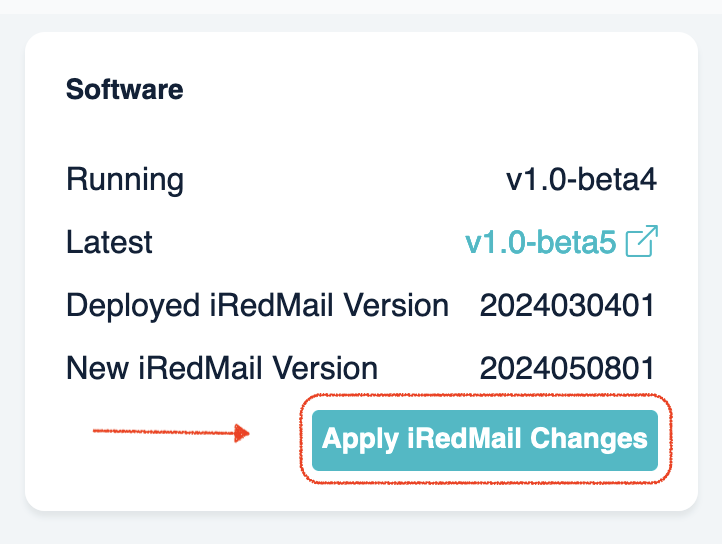

iRedMail Enterprise Edition is a single binary program, upgrading is simple:
Use v1.0-beta6 as new version, Linux OS and amd64 architecture for example:
wget -O /tmp/iredmail https://dl.iredmail.org/ee/iredmail-enterprise-v1.0-beta6-linux-amd64
service iredmail stop
mv /tmp/iredmail /usr/local/bin/iredmail
chown root /usr/local/bin/iredmail
chmod 0500 /usr/local/bin/iredmail
service iredmail start
After upgraded software, please login to its web UI as global admin and check
the Software card on Dashboard page, if there's some update for deployed
software like Postfix, Dovecot, Nginx, etc, it will show the
Apply iRedMail Changes button, click it to finish the upgrade.
That's all.
